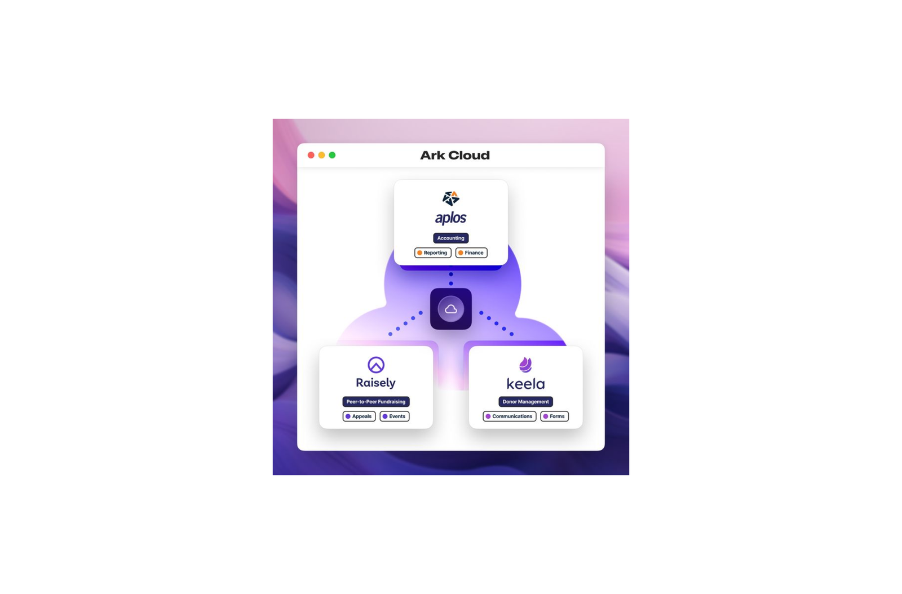
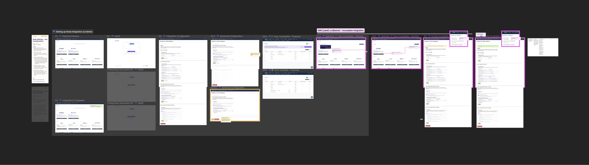
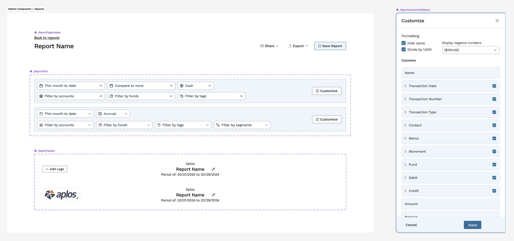
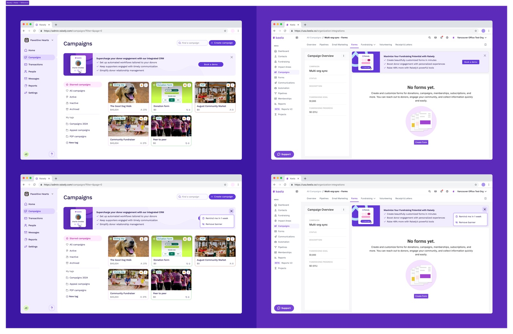

Integration
Aplos × Keela: Connecting CRM and Accounting for Nonprofits
The first cross-product integration after an acquisition: syncing nonprofit CRM data with accounting and tax workflows across two codebases and two teams.

The Real Problem
This was the first thing the two newly merged companies would ship together, and leadership was watching it as a signal of whether the acquisition would actually work. The project was supposed to be a data sync. The brief said: make Keela's CRM talk to Aplos's accounting system. Simple enough on paper.
But after talking to 12 nonprofit finance managers, I realized the problem wasn't data transfer. It was trust. Every manual workaround we saw (spreadsheets, CSV exports, duplicated entry) existed because these teams didn't trust automated processes they couldn't see. They'd been burned before by systems that moved data silently and incorrectly.
That insight reframed the entire project. Instead of building a backend sync, we needed to design an experience where users could see exactly what was happening to their data at every step.
What Made This Hard
This was the first time the two companies had shipped anything together. Beyond the product challenge, I was navigating:
- Two engineering teams with different sprint cadences, naming conventions, and deployment practices
- No shared component library or design language
- Organizational dynamics where each team was protective of their existing patterns
I spent the first two weeks not designing at all: just sitting in on both teams' standups, mapping how each side thought about the same data differently, and building the relationships that would make the actual work possible.
Key Design Decisions
Visible Data Mapping
The easy path was to hide the complexity behind smart defaults, the way most integrations do. I pushed back, because these users had been burned before by automation that moved their data silently, and hiding complexity again would have cost us the trust we were there to build. I designed a mapping interface that shows users exactly how each Keela field connects to each Aplos account: editable, transparent, no black boxes. The metaphor was a visual bridge between two worlds.
Progressive Configuration
The setup flow started simple: default mappings that covered 80% of use cases. Power users could go deeper with one click. The goal was to make the first experience feel effortless while respecting the complexity that experienced users needed.
A Dashboard You Can Trust
A persistent sync status view showed the last sync time, records processed, and any exceptions needing attention. This was the feature that eliminated the "did my data actually sync?" anxiety that had plagued the manual process.
The Organizational Work
The design work was maybe 40% of this project. The rest was organizational:
- I ran the first joint design reviews between the two engineering teams. The format I established became the default for all subsequent cross-product work.
- I created the first shared component library for integration UI, which later became the seed for Orchid's cross-product adoption.
- I presented the integration framework to the executive team, and it became the template for every subsequent cross-product initiative.
What Happened
- 85% reduction in manual data reconciliation time
- Became the blueprint for all subsequent cross-product integrations
- The shared components I built seeded the unified design system
- Established the collaboration model the merged org still uses today
The lesson that outlived the project: when trust, not data transfer, is the actual constraint, transparency beats automation, even when automation would ship faster. Two teams who didn't choose each other found a way to build something together. Everything above, the reviews, the shared library, the executive template, was just how that actually happened.
What Came Next: ARK
The integration work laid the groundwork for something bigger. ARK is the connected nonprofit suite: Keela, Raisely, and Aplos unified under a single system. The integration I led became one of the first building blocks.



